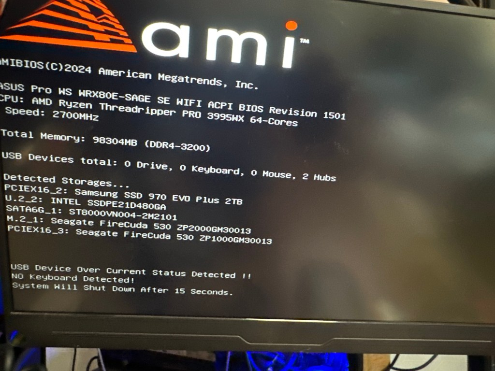

Solving the “USB Device Over Current Status Detected!” Error 🚨💻

If you’re facing the “USB Device Over Current Status Detected!” issue during boot-up (like in the image above), don’t worry—this guide will walk you through the steps to fix it! 🛠️✨
🔍 What Does This Error Mean?
This error typically occurs when your motherboard detects an issue with one or more connected USB devices or ports. It might be caused by:
1️⃣ A faulty USB device or cable.
2️⃣ A damaged USB port.
3️⃣ Improperly installed components.
🛠️ Step-by-Step Solution
1️⃣ Power Off and Disconnect Everything
• Shut down your PC completely.
• Unplug all external USB devices (keyboard, mouse, USB drives, etc.).
• Unplug the power cable and press the power button for 10-15 seconds to discharge any residual power.
2️⃣ Inspect USB Ports 🔦
• Check for physical damage: Look for bent pins, dust, or debris inside the USB ports.
• Clean carefully: Use a soft brush or compressed air to remove dust.
3️⃣ Reconnect USB Devices One by One 🔌
• Plug your USB devices back in, one at a time.
• Boot your system after each connection to identify which device (if any) is causing the issue.
4️⃣ Inspect Internal Connections 🛡️
• Open your PC case (ensure the power is off and disconnected).
• Check the internal USB headers connected to the motherboard.
• Ensure cables are properly seated and not damaged.
5️⃣ Update BIOS or Firmware 💾
• If no hardware issues are found, update your motherboard’s BIOS to the latest version.
• Visit your motherboard manufacturer’s website for instructions and files.
6️⃣ Reset the BIOS Settings 🔄
• Boot into BIOS by pressing the required key (e.g., Del or F2) during startup.
• Select the option to reset BIOS settings to default.
• Save and restart your system.
7️⃣ Test with a New Power Supply (Optional) ⚡
• A faulty power supply can sometimes cause USB over-current issues.
• Try using a different PSU if the problem persists.
🚀 Final Notes
Once you’ve followed the steps, your system should boot without errors. If the problem persists, the motherboard may need repair or replacement.
Got your PC working? Celebrate your success! 🎉 If not, feel free to share your details below for more help. 😊
Happy troubleshooting! 💻✨
After all usb removed and a usb extension card>
If your PC powers on and off rapidly after removing a component, it indicates a potential issue with the hardware or power delivery. Here’s a step-by-step approach to troubleshoot this new behavior:
1️⃣ Recheck the Removed Component
• Why this happens: Removing certain components (e.g., RAM, CPU, or GPU) can cause a system to fail its initial power-on self-test (POST).
• What to do:
• Identify the component you removed and ensure it’s not critical for basic startup (e.g., CPU, RAM, or PSU cables).
• If the component is critical, reinstall it securely and see if the issue resolves.
2️⃣ Inspect the Power Supply (PSU) 🔌
• Why this happens: A failing PSU can cause rapid power cycling.
• What to do:
• Check all PSU cables (24-pin, 8-pin CPU, and GPU connectors). Ensure they’re firmly seated.
• Test your system with a different PSU if available.
3️⃣ Reset the BIOS (CMOS Reset) 🔄
• Why this helps: If the system is confused due to hardware changes, resetting the BIOS can fix boot issues.
• How to reset BIOS:
• Power off the system completely.
• Locate the CMOS battery on your motherboard (a round silver coin cell).
• Remove it for 5-10 minutes, then reinsert it. Alternatively, use the motherboard’s “Clear CMOS” jumper.
4️⃣ Test the Motherboard’s Basic Setup 🛠️
• Why this helps: Minimizing components helps isolate the issue.
• How to test:
• Remove all non-essential components, keeping only:
• Motherboard
• CPU (with cooler)
• One stick of RAM
• PSU
• Try to power on. If it stays on, the removed components may be causing the problem.
5️⃣ Verify the CPU and Cooler 🧊
• Why this matters: A loose or improperly seated CPU or cooler can cause power cycling.
• What to do:
• Remove the CPU cooler and ensure the CPU is seated properly in the socket.
• Reapply thermal paste and reinstall the cooler securely.
6️⃣ Check for Short Circuits ⚡
• Why this happens: A short in the system (e.g., from a misaligned standoff, damaged USB header, or improperly seated component) can cause rapid power cycling.
• How to check:
• Remove the motherboard from the case and place it on a non-conductive surface (like cardboard).
• Reconnect only essential components and power on.
7️⃣ Faulty Component Diagnosis 🔎
• If the system powers on and off rapidly:
• Test each component individually:
• Swap RAM sticks or test in different slots.
• Try booting without the GPU if your CPU has integrated graphics.
• If one specific component causes the issue when installed, it may be faulty.
8️⃣ Consult the Motherboard Manual 📘
• Look for diagnostic lights, beep codes, or a debug display on your motherboard.
• These indicators can help you identify what’s failing (e.g., RAM, CPU, or power).
9️⃣ Seek Professional Help 🧑🔧
• If none of the steps work, the motherboard itself might be faulty or damaged. Consider consulting a professional or reaching out to the manufacturer for support.
Tip: Observe Carefully
If the system powers off very quickly (within seconds), it may be due to overheating (e.g., CPU cooler not installed properly) or a direct short. Pay close attention to system behavior to narrow down the issue.
Let me know how it goes!
cpu refit
If your system powers down quickly but shows a POST (Power-On Self-Test) for a brief moment, this indicates the system is attempting to start but is shutting down due to a safety mechanism. Here’s what might cause this and how to fix it:
Possible Causes
- Overheating Protection
• If the CPU cooler isn’t properly installed or thermal paste is missing/insufficient, the system may shut down to prevent damage.
- Faulty Power Supply (PSU)
• A weak or failing PSU may not deliver enough power to sustain the system after the POST.
- Short Circuit
• A short on the motherboard, case, or components could cause an immediate shutdown.
- Faulty Component
• A critical component (e.g., CPU, RAM, or GPU) might be malfunctioning, causing instability.
- Incorrect BIOS Settings
• Overclocked or unstable settings can cause a boot failure.
Step-by-Step Troubleshooting
1️⃣ Check CPU and Cooler Installation
• Power off the system and remove the CPU cooler.
• Verify that the CPU is correctly seated in the socket (no bent pins).
• Reapply thermal paste (a small pea-sized amount) and reinstall the cooler securely.
2️⃣ Inspect the PSU
• Ensure all power cables are connected securely, especially:
• 24-pin ATX power connector.
• 8-pin CPU power connector.
• Test the system with a known good PSU to rule out power delivery issues.
3️⃣ Minimize the System (Basic POST Test)
• Disconnect all non-essential components, leaving only:
• Motherboard
• CPU (with cooler)
• One stick of RAM
• PSU
• Power it on. If it stays on, add components back one at a time to identify the faulty one.
4️⃣ Clear CMOS (Reset BIOS)
• Reset the motherboard settings by:
-
Turning off the system and unplugging power.
-
Removing the CMOS battery for 5-10 minutes or using the Clear CMOS jumper.
-
Reconnecting power and trying to boot.
5️⃣ Check for Short Circuits
• Remove the motherboard from the case and place it on a non-conductive surface like cardboard.
• Reconnect only the PSU, CPU, and one RAM stick.
• If the system boots properly outside the case, a case standoff or internal wiring might be causing a short.
6️⃣ Inspect POST Indicators (if available)
• Look for diagnostic LEDs or debug codes on the motherboard:
• These can pinpoint issues like faulty RAM, CPU, or GPU.
• Refer to the motherboard manual for specific codes.
7️⃣ Test RAM and GPU
• Try booting with a different RAM stick or in a different slot.
• If you have a GPU installed, try removing it and using integrated graphics (if supported).
If the Issue Persists
• If the system still powers down after POST:
• Suspect the motherboard: A failing motherboard can cause such behavior, especially if its power delivery circuitry is damaged.
• Contact manufacturer support: If your system is under warranty, consider an RMA.
Let me know if any of these steps help resolve the issue!
Imported from rifaterdemsahin.com · 2024